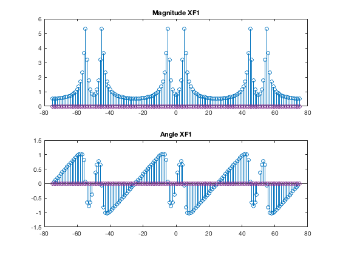
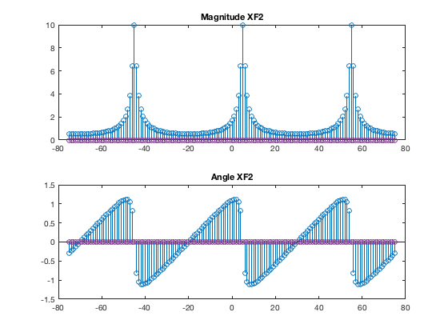
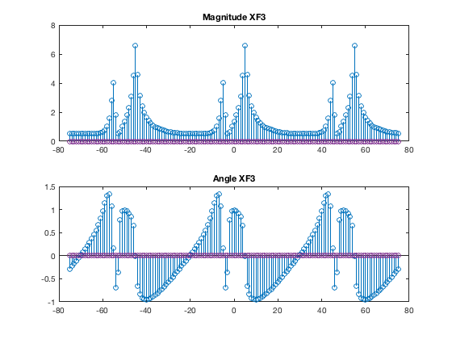
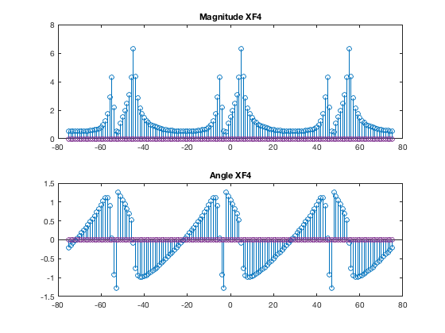
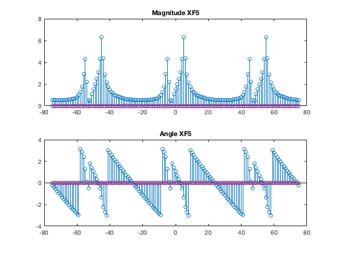
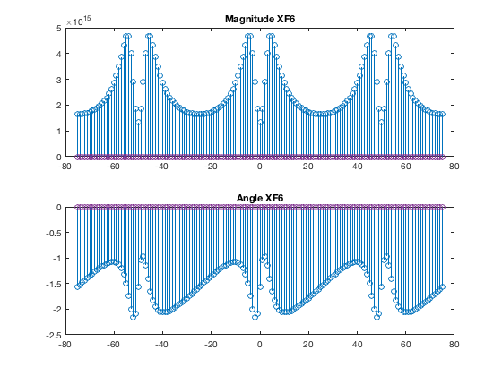
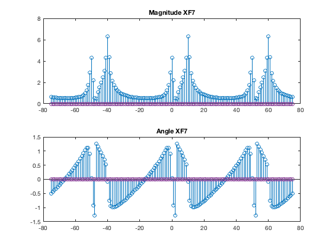
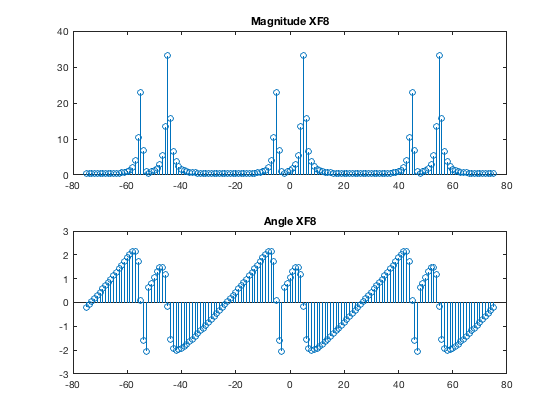

Lab 3
Christian Ardito SID: 861140154, Jesse Layman SID: 861135479, Professor: Yingbo Hua, TA: Qiping Zhu, EE110B-023
Contents

%discussion means explain why the magnitude and phase looks the way it does % 1.a clear all n = 0:100; x1 = 0.9.^n .* cos(pi/5*n); % step function cuts out negative n\ XF1 = zeros(151); N = 50; for k = -75:75 for ll = 0 : 100 XF1(k+76) = XF1(k+76) + x1(ll+1) * exp(-1j*2*pi*k/N*ll); end end figure subplot(2,1,1) stem(-75:75,abs(XF1)); title('Magnitude XF1') subplot(2,1,2) stem(-75:75,angle(XF1)); title('Angle XF1')
1.b
clear all n = 0:100; x1 = 0.9.^n .* cos(pi/5*n); % step function cuts out negative n x2 = 1j.*(0.9 .^n) .* sin(pi/5*n); XF2 = zeros(151); N = 50; for k = -75:75 for ll = 0 : 100 XF2(k+76) = XF2(k+76) + (x1(ll+1)+ x2(ll+1)) * exp(-1j*2*pi*k/N*ll); end end figure subplot(2,1,1) stem(-75:75,abs(XF2)); title('Magnitude XF2') subplot(2,1,2) stem(-75:75,angle(XF2)); title('Angle XF2')
1.c
clear all n = 0:100; x1 = 0.9.^n .* cos(pi/5*n); % step function cuts out negative n x3 = 1j.*(0.7 .^n) .* sin(pi/5*n); XF3 = zeros(151); N = 50; for k = -75:75 for ll = 0 : 100 XF3(k+76) = XF3(k+76) + (x1(ll+1)+ x3(ll+1)) * exp(-1j*2*pi*k/N*ll); end end figure subplot(2,1,1) stem(-75:75,abs(XF3)); title('Magnitude XF3') subplot(2,1,2) stem(-75:75,angle(XF3)); title('Angle XF3')
1.d
clear all n = 0:100; x1 = 0.9.^n .* cos(pi/5*n); % step function cuts out negative n x4 = 1j.*(0.7 .^n) .* sin(pi/7*n); x4 = x1 + x4; XF4 = zeros(151); N = 50; for k = -75:75 for ll = 0 : 100 XF4(k+76) = XF4(k+76) + x4(ll+1) * exp(-1j*2*pi*k/N*ll); end end figure subplot(2,1,1) stem(-75:75,abs(XF4)); title('Magnitude XF4') subplot(2,1,2) stem(-75:75,angle(XF4)); title('Angle XF4')
1.e
clear all n = 0:100; x1 = 0.9.^n .* cos(pi/5*n); % step function cuts out negative n x4 = 1j.*(0.7 .^n) .* sin(pi/7*n); x4 = x1 + x4; x4 = [0 0 x4(1:99)]; XF5 = zeros(151); N = 50; for k = -75:75 for ll = 0 : 100 XF5(k+76) = XF5(k+76) + x4(ll+1) * exp(-1j*2*pi*k/N*ll); end end figure subplot(2,1,1) stem(-75:75,abs(XF5)); title('Magnitude XF5') subplot(2,1,2) stem(-75:75,angle(XF5)); title('Angle XF5')
1.f
clear all n = -100:0; x1 = 0.9.^n .* cos(pi/5*n); % step function cuts out negative n x4 = 1j.*(0.7 .^n) .* sin(pi/7*n); x4 = x1 + x4; XF6 = zeros(151); N = 50; for k = -75:75 for ll = 0 : 100 XF6(k+76) = XF6(k+76) + x4(ll+1) * exp(-1j*2*pi*k/N*ll); end end figure subplot(2,1,1) stem(-75:75,abs(XF6)); title('Magnitude XF6') subplot(2,1,2) stem(-75:75,angle(XF6)); title('Angle XF6')
1.g
clear all n = 0:100; x1 = 0.9.^n .* cos(pi/5*n); % step function cuts out negative n x4 = 1j.*(0.7 .^n) .* sin(pi/7*n); x4 = x1 + x4; x4 = x4 .* exp(1j*2*pi*0.1*n); XF7 = zeros(151); N = 50; for k = -75:75 for ll = 0 : 100 XF7(k+76) = XF7(k+76) + x4(ll+1) * exp(-1j*2*pi*k/N*ll); end end figure subplot(2,1,1) stem(-75:75,abs(XF7)); title('Magnitude XF7') subplot(2,1,2) stem(-75:75,angle(XF7)); title('Angle XF7')
1.h
clear all n = 0:100; x1 = 0.9.^n .* cos(pi/5*n); % step function cuts out negative n x4 = 1j.*(0.7 .^n) .* sin(pi/7*n); x4 = x1 + x4; x8 = conv(x1,x4); XF8 = zeros(151); N = 50; for k = -75:75 for ll = 0 : 100 XF8(k+76) = XF8(k+76) + x8(ll+1) * exp(-1j*2*pi*k/N*ll); end end figure subplot(2,1,1) stem(-75:75,abs(XF8(1:151))); title('Magnitude XF8') subplot(2,1,2) stem(-75:75,angle(XF8(1:151))); title('Angle XF8')
1.i
clear all n = 0:100; x1 = 0.9.^n .* cos(pi/5*n); % step function cuts out negative n x4 = 1j.*(0.7 .^n) .* sin(pi/7*n); x4 = x1 + x4; x9 = x1 .* x4; XF9 = zeros(151); N = 50; for k = -75:75 for ll = 0 : 100 XF9(k+76) = XF9(k+76) + x4(ll+1) * exp(-1j*2*pi*k/N*ll); end end figure subplot(2,1,1) stem(-75:75,abs(XF9)); title('Magnitude XF9') subplot(2,1,2) stem(-75:75,angle(XF9)); title('Angle XF9')